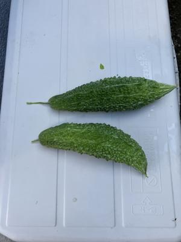
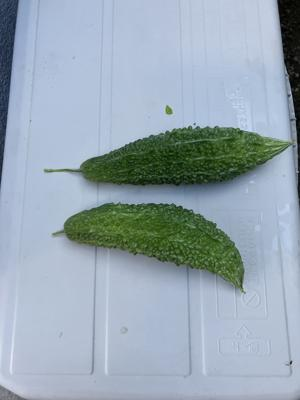
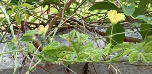
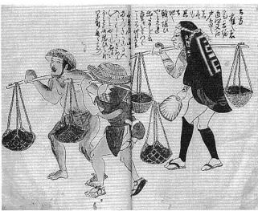

うるがいの話 ある日
最新: 懐かしいラジオ体操【うるがいの話 ある日】とは 一日だけのプログです
『うるがいの話』の最新一日だけのプログで、通信料が少なく経済的だ。カニの画像をクリックすると全ての日付が載る『うるがいの話』サイトを表示します
|
|
【うるがいの話】 うるがい(ｳﾙｶﾞｲ urugai)とは、『もずくがに』の名前でとても大きくなります。 |
|---|---|
|
|
【カミマヤーの話】 猫のことを方言でマヤーといいます。カミマヤー（kamimayaa）とは、神の猫のことです。 |
|
【たながぁの音楽】 たながぁ（ﾀﾅｶﾞｰ tanagaa）とは手長えびのことで、何種類かあり大きいのは車 エビぐらいになります。 |

|
【ぶながぁの話】 ぶながぁ(ﾌﾞﾅｶﾞｰ bunagaa)とは、赤い髪の毛、赤い身体、そして身長は１ｍ２０ｃｍ ぐらい、川の蟹を食べているの目撃された。場所は沖縄県国頭郡大宜味村のと ある村僕の隣近所に住んでいる爺さんから、聞いた話です。 |
|
|
【ギーマの話】 ギーマ(giima)とは、山原の里山に咲くスズランに似た、 花を付けます。実は食べられます、 気が付くと口の周りが紫になっています。 |
2024年08月01日 (木）懐かしいラジオ体操
16:25
 

今日の新聞の投稿欄のタイトルである。子供達が、小学生のころ近所の民生
委員をしている女性から『子供たちを集めてラジオ体操しますから、大人と
して参加をお願いします』といわれ、ホイと了解して参加した。参加した近
所の子供達は６～８名ほどで全員小学生だった。３日目頃から、声をかけた
民生委員の女性は参加しなくなった。大人は私の一人だけで休むこともでき
ず、ラジオ体操をしていた期間は、その後も彼女は欠席だった。あとでヨメ
から、彼女は腰痛で来れなくなったと風の便りがあったらしい。あれから子
供たちは成人して誰がだれか、分からなくなった。民生委員の女性からはラ
ジオ体操の欠席理由の説明は未だにない。そして、近所の子供達の夏休み期
間のラジオ体操は、一年で終わった。
ベランダをみると、ゴヤーの花が咲いているのに気づく。実のつけている。

８月のカレンダーをみたら、パインの日とあった。実家では、パインを作っ
ていた頃があった。父親が、パイン畑で小さい妹達をカマジィに入れ、棒で
それを吊るし担いでいた写真を覚えている。漁業や養豚業だけでなく、農業
もやっていた。生活するために大変だったんだろう。言葉ではイメージしに
くいのでとある絵を拝借。

１６時１８分 ビットコインの総資産 ￥２８、０３６（↓１、２９３！）